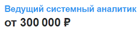
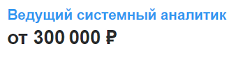

Системный аналитик собирает требования у заказчика, анализирует их, создает ТЗ для разработчиков. Сопровождает процесс разработки, отвечает на вопросы тестировщиков, демонстрирует результаты заказчику, предоставляет обучение пользователям и решает сложные вопросы на этапе сопровождения. Задачи включают общение, анализ, сопровождение проекта и разбор кейсов.
Навыки специалиста
Софтскилы
- Системное мышление
- Коммуникативные навыки
- Внимательность, педантичность и здоровый перфекционизм
- Хорошая память

 

Хардскилы
- SQL на базовом уровне
- Техническая грамотность
- Основы UX/UI
- Грамотный русский язык